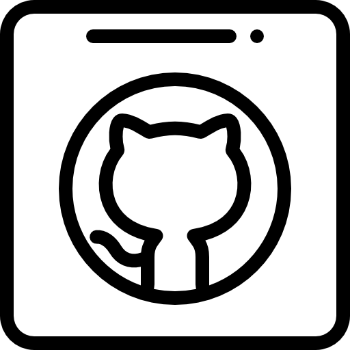

GitHub
- User info, repos, details, README
- Create and delete repositories
Medium
- User info and publications
- Create a post
Software Developer in Test
QA automation, CI/CD, and ML-powered API quality for products that ship with confidence.
Languages and tooling used across API, UI, mobile, and pipeline work.
From bootcamp projects to ML-powered APIs at scale.
Selected work
API, web, and mobile suites built with BDD, Selenium, REST Assured, and more.
I am a Software Developer in Test focused on quality assurance and continuous learning. Across school and industry roles I keep picking up new tools, shipping on time, and making test systems clearer for the next person who opens them.
Certifications, bootcamps, and focused courses from 2019 to 2025.
Geekle.us · 2025
Turkish Testing Board · 2025

Test Automation University · 2023
CertificateTest Automation University · 2023
CertificateBTK Academy · 2023
CertificateTesterYou · 2022
Kodluyoruz · 2021
OOP, Collections, Stream API, SOLID, Spring Boot, REST, JPA, microservices
CertificateKloia · 2021
Selenium, POM, BDD, Cucumber, Karate API testing
BTK Academy · 2021
CertificatePayCore Patika · 2021
Atlassian · 2021
BadgeCisco & UNX · 2020
CertificateElginkan · 2019
CertificateOpen to conversations about SDET roles, automation platforms, and CI/CD quality gates.
Email me